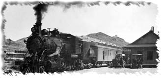

| Section 1 - Early Layout Photos | |

|
The first section of photos features old photos from the beginning of the PDL layout
and some photos of members equipment from the early 1980s. |
| Section 2 - Santa Fe Depot | |
|
|
The second section of PDL photos features Pete Peters'
award winning model of the San Diego ATSF Depot.
|
| Section 3 - Members Models - Norm Wright | |
|
|
The third section of PDL photos features models by one of our prolific scratchbuilders,
Norm Wright.
|
| ATSF Cabooses | |

|
Caboose photos from Winslow, Arizona.
|
| Narrow Gauge Photos | |

|
The Carson & Colorado (Southern Pacific Narrow Gauge, Durango & Silverton RR (D&RGW)
Cumbres & Toltec Scenic RR, East Tennessee and Western North Carolina (Tweetsie),
East Broad Top, West Side Lumber Co., and Rio Grande Southern RR pics
are on my narrow gauge site
SLIM RAILS
|
If you have comments, suggestions on what you would like to see
or data you might like, you can email me at:
Rick Blanchard - rick@urbaneagle.com


--Back to da data.--